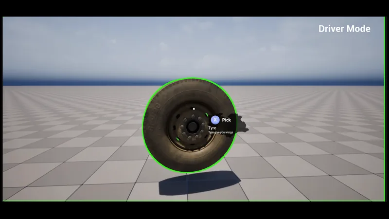
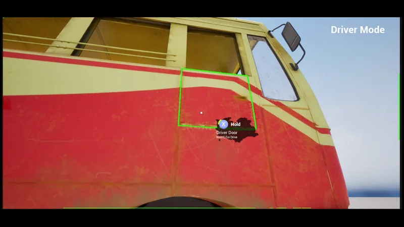
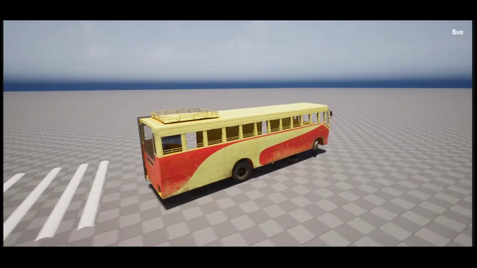

Work Madan: The Hope
Madan: The Hope
An Unreal Engine prototype for a bus-driving game: a first-person interaction framework and a drivable bus.
What the video shows
41-second silent overview: a tyre highlighted with a 'Pick' prompt, carried and dropped beside a red-and-cream bus; walking through the bus cabin; the driver's door highlighted with a 'Hold' prompt; then the bus driving and turning on a grey checkerboard test map.
- My role
- Developer, one of three. I built most of the prototype in C++ and Blueprints.
- Team
- 5 people: three developers (including me), a UI/UX designer and a 3D modeller
- Organisation
- RoA Interactive (independent development team)
- Year
- 2025–2026
- Status
- Paused prototype
- Engine
- Unreal Engine 5 · C++ and Blueprints
- Platform
- PC (prototype)
- Built with
The experience
On foot, the player looks around in first person. Anything they can use is outlined when they look at it, and a small panel shows its name, a short description and the action, "Pick", "Drop" or "Hold". Holding the interact key fills a radial meter for two seconds before the action happens, so nothing is triggered by accident. A tyre can be picked up, carried in front of the camera and dropped again. Holding on the bus's driver's door opens it and puts the player in the driver's seat, and from there the bus can be driven and steered with a chase camera.
That is the whole loop in this build, captured on a test map. The game was planned around missions, but development was paused so the team could focus on Move Your Butt, and missions, routes and finished environments were never built. I present it as what it is: a prototype of the interaction and driving foundations.
My work
I was one of three developers on Madan at RoA Interactive, alongside a UI/UX designer and a 3D modeller, and I built most of the prototype. In C++ that is the first-person character, the interaction trace and interactable classes, HUD routing and the mission data types. In Blueprints it is the input wiring, the bus setup and the door sequence that hands control from walking to driving.
The goal at this stage was a solid foundation rather than content: a small interaction contract that any new object could implement, deliberate hold-to-interact input, and a clean hand-off from walking to driving. Development paused in mid-2026 so the team could put its time into Move Your Butt.
How it works
- TraceA component on the player traces 5 m from the view every 0.2 s for an interactable actor.
- Highlight and panelThe interactable switches on a custom-depth stencil for the outline and tells the HUD to show its name, description and action.
- Hold to actAn Enhanced Input hold trigger reports progress to the HUD meter and fires the interaction when it completes.
- BehaviourSubclasses decide what happens: follow the player, drop, or (for the door) switch possession to the bus.
C++ for the framework, Blueprints for the content. The C++ module provides the first-person character (walk, run, jump, and footsteps timed to the head bob), the interaction trace component, an interactable base class with subclasses for items that can be picked up or collected, HUD routing between an on-foot HUD and a bus HUD, and a mission subsystem that loads mission definitions as data assets through the Asset Manager. Blueprints handle input wiring, the bus itself and the door sequence.
Outlines without extra materials. Highlighting uses the custom-depth stencil and one post-process outline material, so any mesh on an interactable can be outlined without changing its materials.
Carrying with physics. A picked-up item is pulled towards a point in front of the camera by a physics force instead of being parented to the camera, so it keeps behaving like a physical object.
Boarding the bus. The door is a child actor of the bus. Completing the hold on it plays the door animation, hands control from the walking character to the bus pawn and swaps the HUD. The bus is a Chaos wheeled vehicle with four wheels, a tuned engine torque curve and a hull made of box colliders on its own collision channel.
Decisions that shaped it
One small interaction contract. Every usable object answers the same questions (name, description, action word, what happens on completion), and the HUD only talks to that base class. Adding a new object type is a subclass and a Blueprint, not a change to the player.
Hold instead of press. A two-second hold with visible progress makes interactions deliberate in a game where the same key could pick up a part or start driving.
Data assets for missions. Mission definitions were set up as primary data assets so designers could author them without code. The prototype stopped before missions were built on top of this.
Next steps
Development is paused. When it resumes, the priorities are:
- Complete the loop. Add a way to leave the bus, fill in the bus HUD and build the first mission on the existing mission data types.
- Improve robustness. Add null checks on the HUD and camera paths, and move interaction state fully into the player component so items only report what happened.
- Tune the handling. Adjust the bus steering and torque curves through play.
Screens
-

Interactable highlight and prompt on a tyre. -

Driver's-door interaction on the bus. -

Driving the bus on a checkerboard test map.